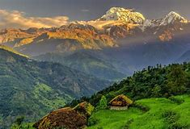

Bhaktapur literally translates to Place of devotees. Also known as Khwopa (Nepal Bhasa: ???? Khwopa), it is an ancient Newa city in the east corner of the Kathmandu Valley, Nepal, about 8 miles (13 km) from the capital city, Kathmandu. It is located in Bhaktapur ( Khwopa ) District in the Bagmati Zone. It is administratively divided into 10 wards.
Khwopa was the largest of the three Newa kingdoms of the Kathmandu Valley and was the capital of Nepal during the great 'Malla Kingdom' until the second half of the 15th century. It has a population of more than 81,728, of which the vast majority are still Newa Nepa mi. Historically more isolated than the other two kingdoms, Kathmandu and Patan, Bhaktapur has a distinctly different form of Nepal Bhasa language.
Bhaktapur has the best-preserved palace courtyards and old city center in Nepal and is listed as a World Heritage Site by UNESCO for its rich culture, temples, and wood, metal and stone artworks. This is supported by the restoration and preservation efforts of German-funded Bhaktapur Development Project (BDP).
The city is famous for a special type of dahi (yogurt) called "Ju Ju(king) dhau(curd). It is experienced by the curd makers that the taste of curd prepared in this location cannot be found elsewhere all over Nepal.
Click on 'Book' button for fill up the details so that you cant visit this place for tour!!!